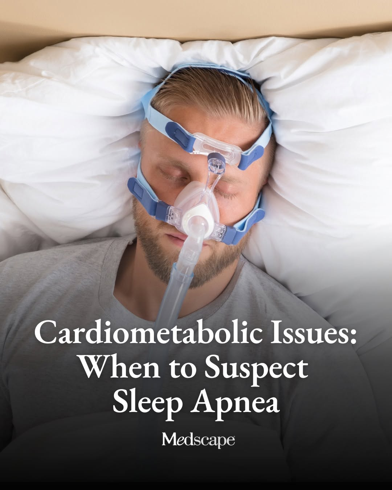

For many patients with resistant hypertension, recurrent atrial fibrillation, type 2 diabetes, heart failure, or chronic kidney disease, clinicians often respond by escalating medications, adjusting treatment targets, or adding specialists. One contributor to persistent cardiometabolic disease that clinicians may overlook is obstructive sleep apnea (OSA).
The diagnostic challenge is that many patients with OSA do not present with the classic symptoms clinicians often associate with the disorder — snoring and excessive daytime sleepiness. Instead, they may show up with difficult-to-control blood pressure, nighttime symptoms, fragmented sleep, or worsening cardiovascular disease.
“Many of these patients are not sleepy,” said Sogol Javaheri, MD, associate physician in the Division of Sleep and Circadian Rhythm Disorders at Brigham and Women’s Hospital in Boston. For patients with high blood pressure, nocturia, or disrupted sleep, “doing a home sleep test is a great next step,” she said. Cardiometabolic Issues: When to Suspect Sleep Apnea (Medscape)
